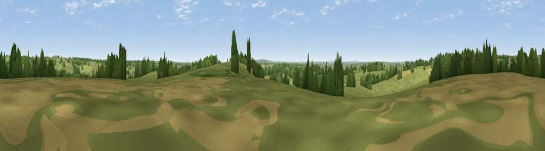

Viewpoint near Milwich
#28742 in England · top 38% of its area beats it · near MilwichWhere it is
The exact computed spot (SJ 96425 31575). Click the marker for map links.
The view, rendered

A 360° render of this exact spot computed from the terrain model, tree cover and land cover — summer colours, afternoon light, calibrated against photographs of famous viewpoints. Real trees, hedges and buildings will differ in detail.
The panorama
Grey silhouette: terrain skyline in each direction (720 bearings, Earth curvature and refraction included). Dashed green: skyline with trees (+15 m) and buildings (+8 m) as obstacles. Blue strip: how far the ground is visible on each bearing.
Where the view opens
Wedge length = distance to the farthest visible ground on that bearing (vegetation-aware). Rings at 10, 25 and 50 km.
What fills the view
73% grassland · 15% woodland · 11% cropland · 1% built-up
Angular shares of the visible panorama (visual magnitude), not map area. Landscape diversity 0.35 (0–1 Shannon).
Key numbers
More beautiful places nearby
The staircase of upgrades: each row has a higher view potential than everything closer. Driving times are estimates from straight-line distance, calibrated against real road routing — check an actual route before setting out.
| Place | Direction | Drive | Score |
|---|---|---|---|
| Viewpoint near Aston-by-Stone | WNW · 4 km | ~9 min | 50.3 |
| Viewpoint near Oulton | WNW · 5 km | ~11 min | 51.2 |
| Viewpoint near Moddershall | NW · 5 km | ~11 min | 52.3 |
| Peasley Bank | WSW · 7 km | ~14 min | 57.2 |
| Stafford Castle | SW · 11 km | ~21 min | 60.6 |
| Viewpoint near Cheadle | NNE · 13 km | ~24 min | 61.0 |
| Viewpoint near Beech | WNW · 14 km | ~25 min | 62.9 |
| Viewpoint near Cauldon Lowe | NE · 20 km | ~33 min | 71.9 |
52.88163, -2.05457 · source: screening · position refined by local search. Computed location — check access rights before visiting.